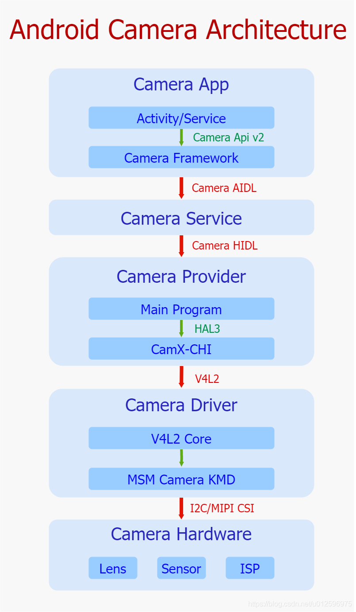

深入理解Android相机体系结构之二：安卓相机架构概览
Android系统利用分层思想，将各层的接口定义与实现分离开来，以接口作为各层的脉络连接整体框架，将具体实现的主导权交由各自有具体实现需求的平台厂商或者Android 开发者，这样既做到把控全局，也给予了众多开发者足够大的创作空间，这体现出了一个优秀的开源系统应有的胸怀和远见。其中，谷歌根据职能的不同将Camera框架一共划分成了五层，分别是App、Service、Provider、Driver以及Hardware，下面的Camera的整体架构图很清晰地显示出了其五层架构以及相互的关联接口。

Camera App
应用层处于整个框架的顶端，承担着于用户直接进行交互的责任，承接来自用户直接或者间接的比如预览/拍照/录像等一系列具体需求，一旦接收到用户相关UI操作，便会通过Camera Api v2标准接口将需求发送至Camera Framework部分，并且等待Camera Framework回传处理结果，其中包括了图像数据以及整体相机系统状态参数，之后将结果以一定方式反馈给用户，达到记录显示种种美好瞬间的目的。
Camera Framework
该层主要位于Camera App与Camera Service之间，以jar包的形式运行在App进程中，它封装了Camera Api v2接口的实现细节，暴露接口给App进行调用，进而接收来自App的请求，同时维护着请求在内部流转的业务逻辑，最终通过调用Camera AIDL跨进程接口将请求发送至Camera Service中进行处理，紧接着，等待Camera Service结果的回传，进而将最终结果发送至App。
Camera Service
该层位于Camera Framework与Camera Provider之间，作为一个独立进程存在于Android系统中，在系统启动初期会运行起来，它封装了Camera AIDL跨进程接口，提供给Framework进行调用，进而接收来自Framework的图像请求，同时内部维护着关于请求在该层的处理逻辑，最终通过调用Camera HIDL跨进程接口将请求再次下发到Camera Provider中，并且等待结果的回传，进而将结果上传至Framework中。
Camera Provider
该层位于Camera Service与Camera Driver之间，作为一个独立的进程存在于Android系统中，同时在系统启动初期被运行，提供Camera HIDL跨进程接口供Camera Service进行调用，封装了该接口的实现细节，接收来自Service的图像请求，并且内部加载了Camera HAL Module，该Module由OEM/ODM实现，遵循谷歌制定的标准Camera HAL3接口，进而通过该接口控制通过谷歌标准HAL3接口控制Camera HAL部分，最后等待Camera HAL的结果回传，紧接着Provider将结果通过Camera HIDL接口将结果发送至Camera Service。
CamX-CHI(Camera HAL)
该部分是高通对谷歌Camera HAL3接口的实现，以so库的形式被加载至Camera Provider中，之前采用的是QCamera & MM-Camera架构，但是为了更好灵活性和可扩展性，而今高通又提出了CamX-CHI架构，该架构提供HAL3接口给Provider进行调用，接收来自Provider的请求，而内部对HAL3接口进行了实现，并且通过V4L2标准框架控制着相机驱动层，将请求下发至驱动部分，并且等待结果回传，进而上报给Camera Provider。
CamX-CHI架构由CamX和CHI两个部分组成，CamX负责一些基础服务代码的实现，不经常改动，CHI负责实现一些可扩展性和定制化的需求，方便OEM/ODM添加自己的扩展功能。CamX主要包括实现HAL3入口的hal模块，实现与V4L2驱动交互的csl模块，实现硬件node的hwl和实现软件node的swl。CHI通过抽象出Usecase、Featrue、Session、Pipeline、Node的概念，使厂商可以通过实现Node接口来接入自己的算法，并通过XML文件灵活配置Usecase、Pipeline、Node的结构关系。
Camera Driver
Linux为视频采集设备制定了标准的V4L2接口，并在内核中实现了其基础框架V4L2 Core。用户空间进程可以通过V4L2接口调用相关设备功能，而不用考虑其实现细节。V4L2提出了总设备和子设备的概念，并通过media controller机制向用户空间暴露自己的硬件拓扑结构。视频采集设备驱动厂商按照V4L2 Core的要求开发自己的驱动程序，只需要实现相应的结构体和函数接口并调用注册函数注册自己就行。
在高通平台上，高通对相机驱动部分进行了实现，利用了V4L2框架的可扩展特性，设计出了一套独特的KMD框架。在该框架内部主要包含了三个部分，CRM、Camera Sync以及一系列子设备，首先，作为框架顶层管理者，CRM创建了一个V4L2主设备用来管理所有的子设备，并且暴露设备节点video0给用户空间，同时内部维护着整个底层驱动业务逻辑。其次，Camera Sync创建了一个V4L2主设备，同时暴露了设备节点video1给用户空间，主要用于向用户空间反馈图像数据处理状态。最后，子设备模块被抽象成v4l2_subdev设备，同样也暴露设备节点v4l2-subdev给用户空间进行更精细化的控制。另外，在整个框架初始化的过程中，通过media controller机制，保持了在用户空间进行枚举底层硬件设备的能力。
Camera Hardware
相机硬件处在整个相机体系的最底层，是相机系统的物理实现部分，该部分包括镜头、感光器、ISP三个最重要的模块，还有对焦马达、闪光灯、滤光片、光圈等辅助模块。镜头的作用是汇聚光线，利用光的折射性把射入的光线汇聚到感光器上。感光器的作用是负责光电转换，通过内部感光元件将接收到的光信号转换为电子信号进而通过数电转换模块转为数字信号，并最后传给ISP。ISP负责对数字图像进行一些算法处理，如白平衡、降噪、去马赛克等。
通过上面的介绍，我们可以发现，谷歌通过以上五级分层，形成了整个相机框架体系，其中层与层之间通过行业协会、开源社区或者谷歌制订的标准接口进行连接，上层通过调用标准接口下发请求到下层，下层负责对标准接口进行实现，最终将请求再次封装并调用下一层级的对外接口下发到下层。所以总得来说，谷歌使用标准接口作为骨架搭建整体框架，而其具体实现交由各层自己负责，从整体上来看，职责划分明确，界限分明，这样的设计，一来利用标准接口，保持了整个框架业务正常流转，二来极大地降低了各层耦合度，保持了各层的相互独立，最终让整个框架处于一个稳定同时高效的运行状态。